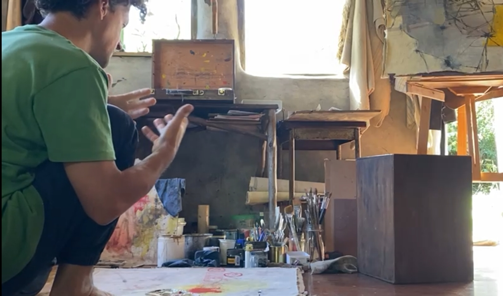

Perspectiva
La práctica artística actual de Manuel Munilla se centra en la exploración del lenguaje abstracto y la técnica mixta. En un proceso de escucha y hallazgo, el artista busca responder a lo que los materiales evocan o demandan, permitiendo que la obra revele su propia naturaleza.
En su producción se interesa por representar las energías y estructuras subyacentes de la realidad, plasmando ideas metafísicas donde convergen varios lenguajes, como los de la filosofía, la física y la poesía.
A través de la abstracción, construye mundos que suscitan pausas y silencios; espacios de detenimiento que invitan a una reflexión nacida de la emoción. Su obra es, en última instancia, una búsqueda de lo invisible manifestado en lo tangible.
Nota biográfica
Manuel Munilla nació en Buenos Aires, Argentina, en 1983. Su formación en la pintura comenzó en el año 2001 y se desarrolló principalmente bajo la guía de los maestros Elba Soto y Julio Lavallén, con quienes profundizó en el estudio de la figura humana.
Participó en diversas exposiciones individuales y colectivas, y sus pinturas integran colecciones privadas en Argentina y el exterior.
Vive y trabaja en Miramar, Provincia de Buenos Aires.
Consultas
Para la adquisición y envío de obras o cualquier otra inquietud, puede enviar un mensaje a través de los siguientes canales directos:
- WhatsApp Enviar mensaje
- Email manuelmunilla@gmail.com
- Instagram @manuel.munilla